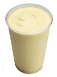

Food and Human Nutrition
Form Two
2 ml vanilla essence
2 medium ripe banana
2 ice cubes
Method
1. Boil milk and cool.
2. Press the banana through a sieve to get banana pulp.
3. Put the banana pulp, milk, sugar, vanilla essence and ice cubes into a shaker or bottle and shake them vigorously. You can also blend all the ingredients together to get a smooth mixture.
4. Serve it in a glass as shown in Figure 3.12.

Figure 3.12: Banana milkshake
Meals for a child with acute malnutrition without oedema
Energy-rich foods, such as carbohydrates and healthy fats and oils, can be used to overcome acute malnutrition without oedema. Healthy fats and oils include plant oils from seeds like sunflower, simsim, groundnut and oils from fish. The child with this condition needs more energy and protein source foods. Foods rich in protein, such as milk, fish, eggs and nuts, should be included in the meal. Foods rich in carbohydrates, such as potatoes, yams and green bananas, are important to provide enough energy to the body for various functions. Vegetables and fruits should also be included in the meal to provide vitamins, minerals and other nutrients. Likewise, enough fluids should be provided to prevent dehydration.